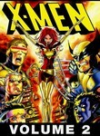
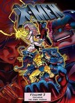
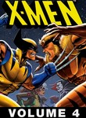
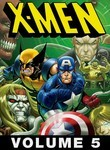

X-Men: The Animated Series
Stephen Klancher
...has seen 1
...has seen 0 hours
...has not seen 1.3 hours

Timeline
First Unseen:
Night of the Sentinels (2) (# 2)
...has seen 1
...has seen 0 hours
...has not seen 1.3 hours
Timeline
First Unseen:
Night of the Sentinels (2) (# 2)




The Phoenix Saga: The Dark Shroud (2) (1994) Airs on 1994-09-06
S3 - E4 of X-Men: The Animated Series
S3 - E4 of X-Men: The Animated Series
The Phoenix Saga: Cry of the Banshee (3) (1994) Airs on 1994-09-07
S3 - E5 of X-Men: The Animated Series
S3 - E5 of X-Men: The Animated Series
The Phoenix Saga: The Starjammers (4) (1994) Airs on 1994-09-08
S3 - E6 of X-Men: The Animated Series
S3 - E6 of X-Men: The Animated Series
The Dark Phoenix: The Inner Circle (2) (1994) Airs on 1994-11-12
S3 - E12 of X-Men: The Animated Series
S3 - E12 of X-Men: The Animated Series
The Dark Phoenix: The Dark Phoenix (3) (1994) Airs on 1994-11-19
S3 - E13 of X-Men: The Animated Series
S3 - E13 of X-Men: The Animated Series
The Dark Phoenix: The Fate of the Phoenix (4) (1994) Airs on 1994-11-26
S3 - E14 of X-Men: The Animated Series
S3 - E14 of X-Men: The Animated Series

Have Yourself a Morlock Little X-Mas (1995) Airs on 1995-12-23
S4 - E12 of X-Men: The Animated Series
S4 - E12 of X-Men: The Animated Series
